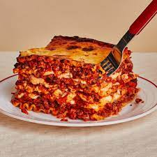

Lasagna

Ingredients:
- 1 lb ground beef
- 1 jar (24 oz) marinara sauce
- 1 cup ricotta cheese
- 1 egg
- 1/4 cup grated Parmesan cheese
- 9 lasagna noodles, cooked
- 2 cups shredded mozzarella cheese
Instructions
- Make the Meat Sauce: Brown 1 lb ground beef in a skillet. Drain fat and add 1 jar (24 oz) marinara sauce. Simmer for 10 minutes.
- Prepare the Ricotta Mixture: In a bowl, mix 1 cup ricotta cheese, 1 egg, and 1/4 cup grated Parmesan cheese.
- Assemble the Lasagna: Preheat oven to 375°F (190°C). Spread a thin layer of meat sauce on the bottom of a 9x13-inch baking dish. Layer 3 lasagna noodles, 1/3 of the ricotta mixture, 1/3 of the meat sauce, and 1/3 of the shredded mozzarella cheese. Repeat layers twice.
- Bake: Cover with foil and bake for 25 minutes. Remove foil and bake for an additional 10 minutes. Let stand for 10 minutes before serving.